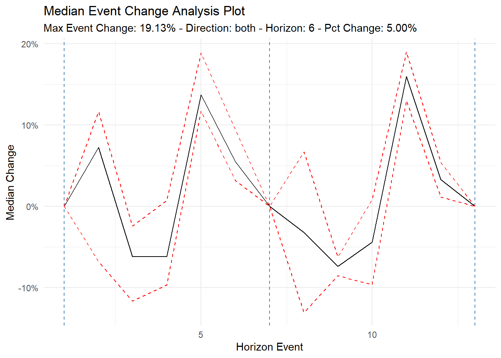

ts_time_event_analysis_tbl(
.data,
.date_col,
.value_col,
.percent_change = 0.05,
.horizon = 12,
.precision = 2,
.direction = "forward",
.filter_non_event_groups = TRUE
)Introduction
Time-to-event analysis, also known as survival analysis, is a statistical technique used to analyze the length of time until an event occurs. This type of analysis is often used in fields such as healthcare, engineering, and finance to understand the factors that influence the likelihood of an event occurring and to make predictions about future events.
In economics, an event study is a statistical technique used to analyze the effect of a specific event on a particular market or financial instrument. Event studies are commonly used in finance to understand how events, such as the announcement of a new product, the release of financial earnings, or a change in government policy, may impact the price or performance of a company’s stock or other financial instruments.
To conduct an event study, analysts typically collect data on the performance of a market or financial instrument before and after the event in question. This data is then used to estimate the effect of the event on the market or instrument.
There are several different methods that can be used to conduct an event study, including the market model, the abnormal return method, and the buy-and-hold abnormal return method. These methods allow analysts to quantify the effect of the event on the market or instrument and to identify any changes in market behavior that may have occurred as a result of the event.
Overall, event studies are a valuable tool for understanding how specific events may impact financial markets and instruments, and are widely used in finance and economics to inform investment decisions and to better understand market behavior.
In this post we are going to examine a function from the R package {healthyR.ts} has a function called ts_time_event_analysis_tbl() that will help us understand what happens after a specified event, in this instance it will always be some percentage decrease or increase in a value.
There is a great article from Investopedia on this economic topic here
Function
The function is ts_time_event_analysis_tbl() and it’s complimentary plotting function ts_event_analysis_plot().
Here is the tibble data return function.
Let’s take a look at the arguments to the parameters for this one.
.data- The date.frame/tibble that holds the data..date_col- The column with the date value..value_col- The column with the value you are measuring..percent_change- This defaults to 0.05 which is a 5% increase in thevalue_col..horizon- How far do you want to look back or ahead..precision- The default is 2 which means it rounds the lagged 1 value percent change to 2 decimal points. You may want more for more finely tuned results, this will result in fewer groupings..direction- The default is forward. You can supply either forward, backwards or both.filter_non_event_groups- The default is TRUE, this drops groupings with no events on the rare occasion it does occur.
Now the plotting function.
ts_event_analysis_plot(
.data,
.plot_type = "mean",
.plot_ci = TRUE,
.interactive = FALSE
).data- The data that comes from the ts_time_event_analysis_tbl().plot_type- The default is “mean” which will show the mean event change of the output from the analysis tibble. The possible values for this are: mean, median, and individual..plot_ci- The default is TRUE. This will only work if you choose one of the aggregate plots of either “mean” or “median”.interactive- The default is FALSE. TRUE will return aplotlyplot.
Examples
Let’s go through a couple examples using the AirPassengers data. We will first transform it into a tibble and then we will use a look period of 6. Let’s see the data output and then we will visualize.
library(healthyR.ts)
library(dplyr)
df <- ts_to_tbl(AirPassengers) %>% select(-index)
event_tbl <- ts_time_event_analysis_tbl(
.data = df,
.horizon = 6,
.date_col = date_col,
.value_col = value,
.direction = "both"
)
glimpse(event_tbl)Rows: 33
Columns: 18
$ rowid <int> 1, 2, 3, 4, 5, 6, 7, 8, 9, 10, 11, 12, 13, 14, 15…
$ date_col <date> 1949-02-01, 1949-03-01, 1949-04-01, 1949-05-01, …
$ value <dbl> 118, 132, 129, 121, 135, 148, 148, 199, 184, 162,…
$ lag_val <dbl> 112, 118, 132, 129, 121, 135, 148, 199, 199, 184,…
$ adj_diff <dbl> 6, 14, -3, -8, 14, 13, 0, 0, -15, -22, -16, 20, 5…
$ relative_change_raw <dbl> 0.05357143, 0.11864407, -0.02272727, -0.06201550,…
$ relative_change <dbl> 0.05, 0.12, -0.02, -0.06, 0.12, 0.10, 0.00, 0.00,…
$ pct_chg_mark <lgl> TRUE, FALSE, FALSE, FALSE, FALSE, FALSE, FALSE, F…
$ event_base_change <dbl> 0.00000000, 0.11864407, -0.02272727, -0.06201550,…
$ group_number <fct> 1, 1, 1, 1, 1, 1, 1, 1, 1, 1, 1, 1, 1, 2, 2, 2, 2…
$ numeric_group_number <int> 1, 1, 1, 1, 1, 1, 1, 1, 1, 1, 1, 1, 1, 2, 2, 2, 2…
$ group_event_number <int> 1, 1, 1, 1, 1, 1, 1, 2, 2, 2, 2, 2, 2, 2, 2, 2, 2…
$ x <int> 1, 2, 3, 4, 5, 6, 7, 1, 2, 3, 4, 5, 6, 7, 8, 9, 1…
$ mean_event_change <dbl> 0.00000000, 0.03849647, -0.06815622, -0.04991040,…
$ median_event_change <dbl> 0.00000000, 0.07222222, -0.06217617, -0.06201550,…
$ event_change_ci_low <dbl> 0.00000000, -0.06799693, -0.11669576, -0.09692794…
$ event_change_ci_high <dbl> 0.000000000, 0.116322976, -0.024699717, 0.0073964…
$ event_type <fct> Before, Before, Before, Before, Before, Before, A…Let’s visualize!
ts_event_analysis_plot(
.data = event_tbl
)
Let’s see the median now.
ts_event_analysis_plot(
.data = event_tbl,
.plot_type = "median"
)
Now let’s see it as an interactive plot.
ts_event_analysis_plot(
.data = event_tbl,
.plot_type = "median",
.interactive = TRUE
)Now let’s see all the individual groups.
ts_event_analysis_plot(
.data = event_tbl,
.plot_type = "individual",
.interactive = TRUE
)Single direction plotting.
ts_time_event_analysis_tbl(
.data = df,
.horizon = 6,
.date_col = date_col,
.value_col = value,
.direction = "backward"
) %>%
ts_event_analysis_plot()
And…
ts_time_event_analysis_tbl(
.data = df,
.horizon = 6,
.date_col = date_col,
.value_col = value,
.direction = "forward"
) %>%
ts_event_analysis_plot()
Voila!